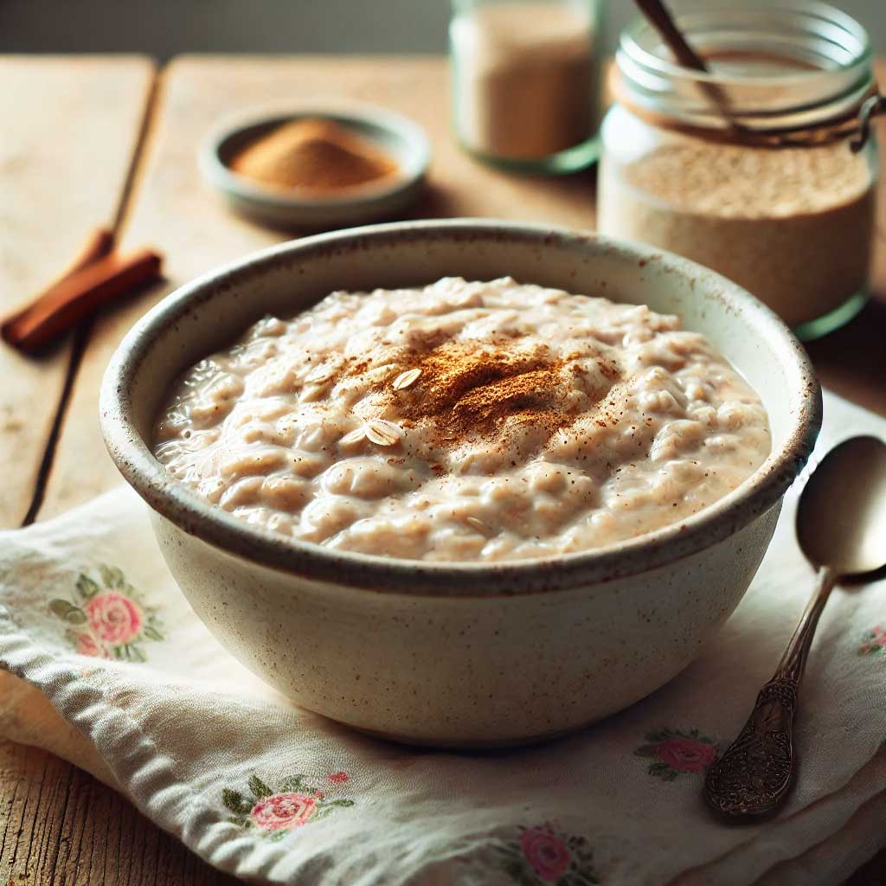

A simple, creamy, and delicious breakfast made with steel-cut oats and infused with vanilla flavor. Perfect for busy mornings — just prepare the night before and enjoy!
Ingredients
- 1/2 cup steel-cut oats
- 1 cup unsweetened plant-based milk (e.g., almond, oat)
- 1 tbsp maple syrup
- 1 tsp vanilla extract
- 1/2 tsp cinnamon
- Optional toppings: fruit, nuts, seeds
Instructions
- In a jar or bowl, combine the oats, plant milk, vanilla extract, maple syrup, and cinnamon.
- Stir well to mix all ingredients.
- Cover and refrigerate overnight or for at least 6 hours.
- In the morning, stir again and add your favorite toppings before serving.